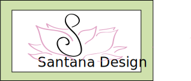

Homepage
Portfolio
JDToolkit
Contact Me

Ally Santana is a student in the Journalism and Design department of The New School. Her contact
✉️
information is above along with her portfolio of art work she has completed. Her work for JD Toolkit work is also in a link above.